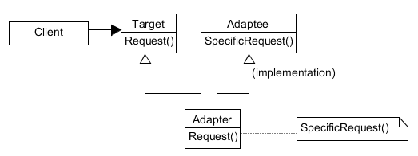
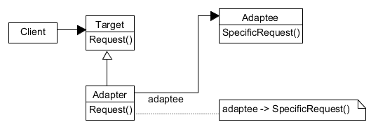

类对象结构型模式
适配器（Adapter）：将一个类的接口转换成客户希望的另外一个接口。 Adapter 模式使得原本由于接口不兼容而不能一起工作的类一起工作。
包装器（Wrapper）
有时，为复用而设计的工具箱类不能够被复用的原因仅仅是因为它的接口与专业应用领域所需要的接口不匹配。
想使用一个已经存在的类，而它的接口不符合要求。
想创建一个可以复用的类，该类可以与其他不相关的类或不可预见的类（即那些接口可能不一定兼容的类）协同工作。
（仅适用于对象 Adapter）想使用一些已经存在的子类，但是不可能对每一个都进行子类化以匹配它们的接口。对象适配器可以适配它的父类接口。
类适配器使用多重继承对一个接口与另一个接口进行匹配。
对象适配器依赖于对象组合。
Target
定义 Client 使用的与特定领域相关的接口。
Client
与符合 Target 接口的对象协同。
Adaptee
定义一个已存在的接口，这个接口需要适配。
Adapter
对 Adaptee 的接口与 Target 接口进行适配。
Client 在 Adapter 实例上调用一些操作。接着适配器调用 Adaptee 的操作实现这个请求。
类适配器
用一个具体的 Adapter 类对 Adaptee 和 Target 进行匹配。结果是当想要匹配一个类以及所有它的子类时，类 Adapter 将不能胜任工作。
使得 Adapter 可以重定义 Adaptee 的部分行为，因为 Adapter 是 Adaptee 的一个子类。
仅仅引入了一个对象，并不需要额外的指针以间接得到 adaptee。
对象适配器
允许一个 Adapter 与多个 Adaptee —— 即 Adaptee 本身以及它的所有子类（如果有子类的话）同时工作。Adapter 也可以一次给所有的 Adaptee 添加功能。
使得重定义 Adaptee 的行为比较困难。这就需要生成 Adaptee 的子类并且使得 Adapter 引用这个子类而不是引用 Adaptee 本身。
需要考虑的其他因素：
Adapter 的匹配程度。
可插入的 Adapter。
使用双向适配器提供透明操作。
注意的问题：
使用 C++ 实现适配器类。
可插入的适配器。
有 3 种实现方法，它们都要为 Adaptee 找到一个“窄”接口，即可用于适配的最小操作集。
使用抽象操作。
使用代理对象。
参数化的适配器。
优点：
允许客户使用新的子集合，无须改变“任何”代码。
缺点：
若将若干类整合在一起来提供期望的接口时，代码量较大。
实现一个适配器可能需要一番功夫，也可能不费功夫，视目标接口的大小与复杂度而定。
类适配器需要用到多重继承。但是，Java 不支持多继承，所以 Target 必须是接口，不可以是类。
对象适配器的 Target 可以是具体或抽象的类，也可以是接口。
窄化/扩展适配问题。
窄化适配：将“大”的接口适配成“小”的接口是安全的，“大”接口中的多余方法将不被“调用”。
扩展适配：将“小”的接口适配成“大”的接口需要注意，“小”接口不可能实现“大”接口中的多余方法，适配这些多余方法时，一般需抛出异常。
模式 Bridge 的结构与对象适配器类似，但是 Bridge 模式的出发点不同：Bridge 目的是将接口部分和实现部分分离，从而对它们可以较为容易也相对独立的加以改变。 而 Adapter 则意味着改变一个已有对象的接口。
Decorator 模式增强了其他对象的功能而同时又不改变它的接口。因此，decorate 对应用程序的透明性比适配器要好。结果是 decorator 支持递归组合， 而纯粹使用适配器是不可能实现这一点的。
模式 Proxy 在不改变它的接口的条件下，为另一个对象定义了一个代理。